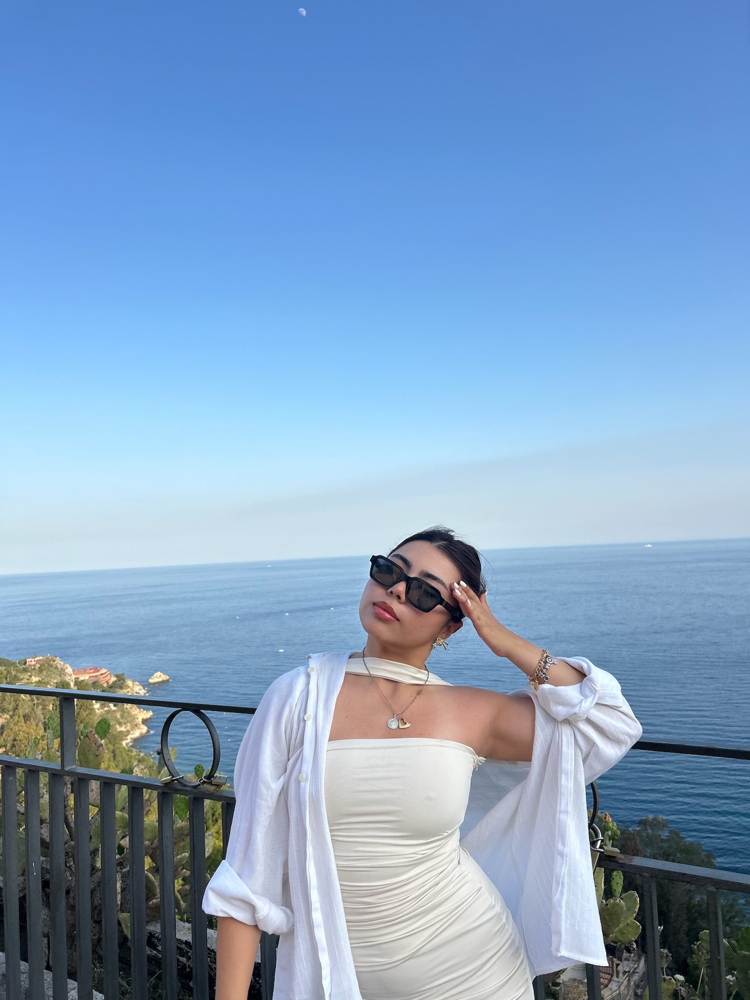

Hola! me llamo
Valentina
Pero me dicen "Valen". Soy estudiante de Marketing y apasionada por la comunicación, la creatividad y el mundo digital.
Me interesa especialmente la creación de contenido, el branding y la gestión de redes sociales porque me permiten conectar con las personas de forma auténtica.
En esta página comparto un poco sobre mí, mis intereses y algunos proyectos que reflejan lo que voy aprendiendo durante la carrera.
Ver mis intereses →